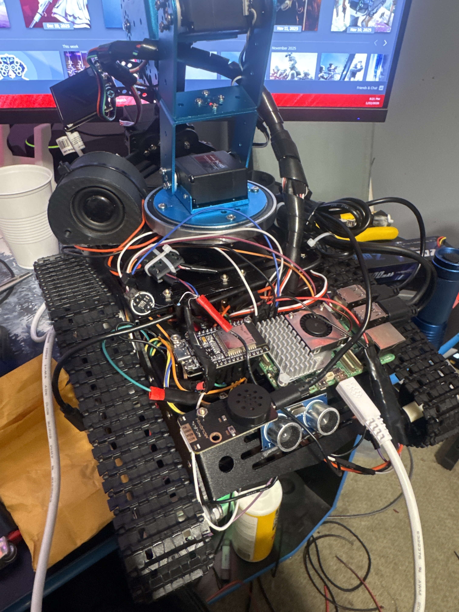

Project Overview
This build involved wiring and integrating a tracked base with arm controls, power distribution, and multiple electrical components. The focus was on practical assembly, wiring layout, and making the system function as one complete build.
Hands-On Work Performed
Wired motors, controllers, and power components into a single system. Planned component placement and cable routing for cleaner installation. Performed soldering, crimping, and connection testing during assembly. Troubleshot power and control issues while integrating multiple parts.
Real-World Value
This project helped build practical experience in component wiring, controls, electrical troubleshooting, and full-system assembly.